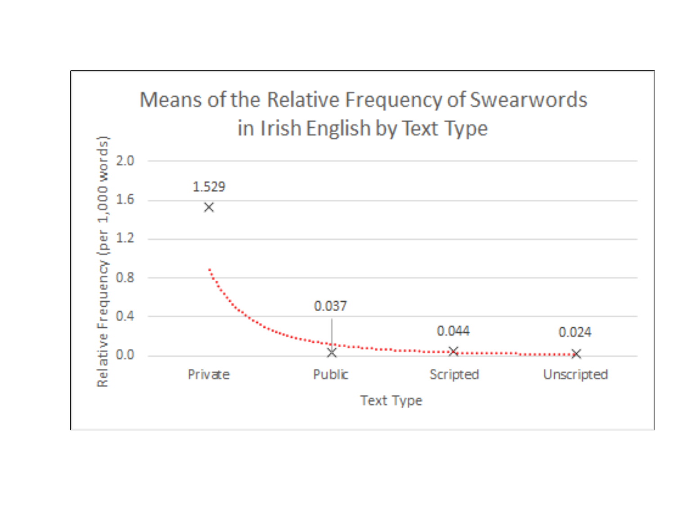
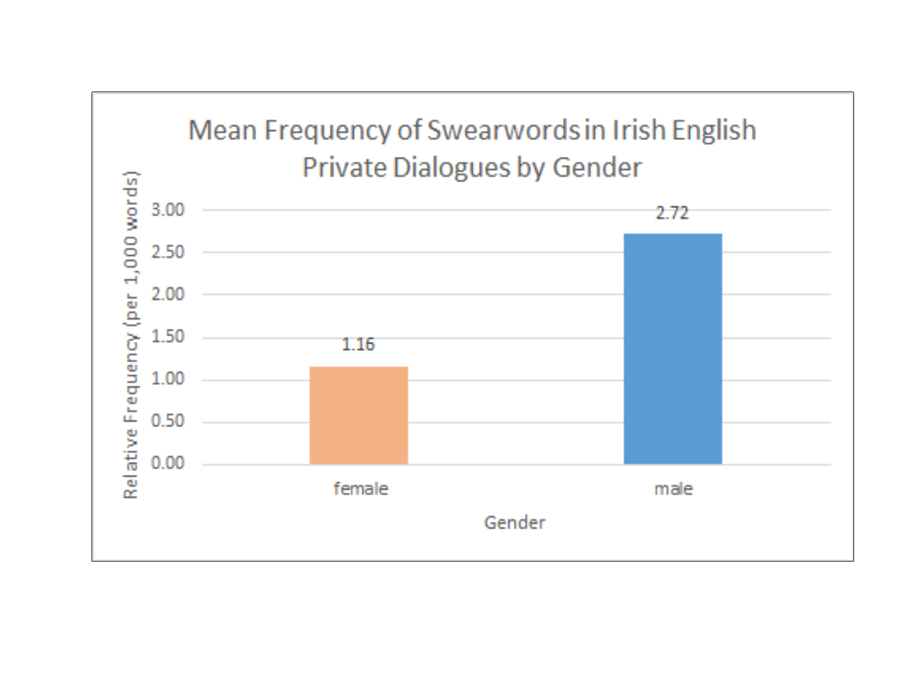
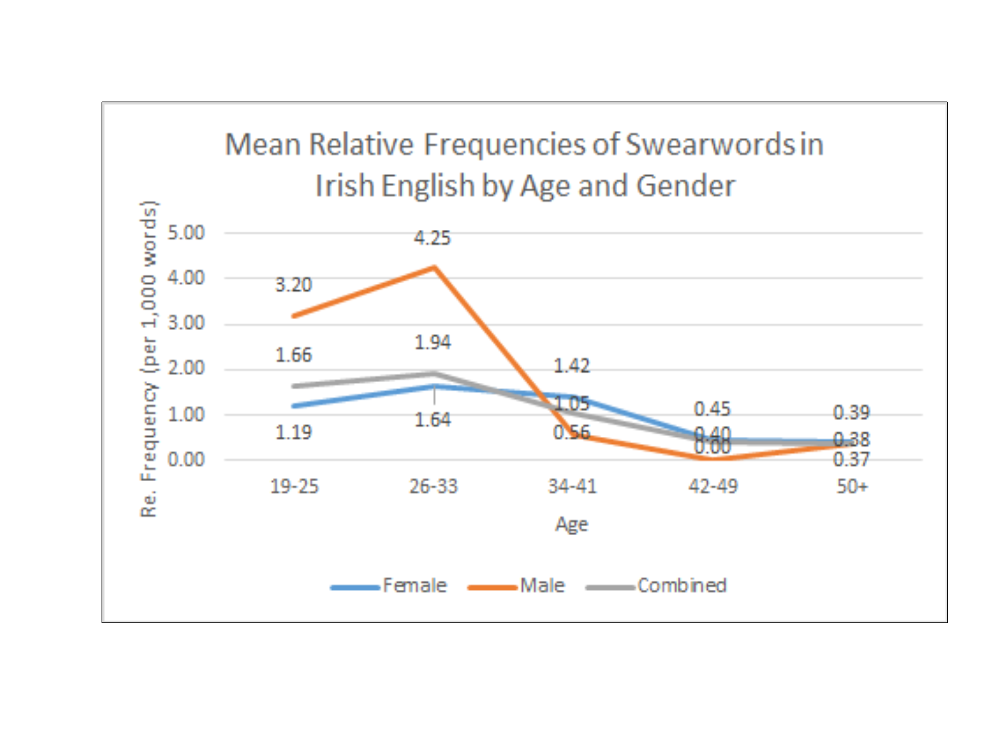
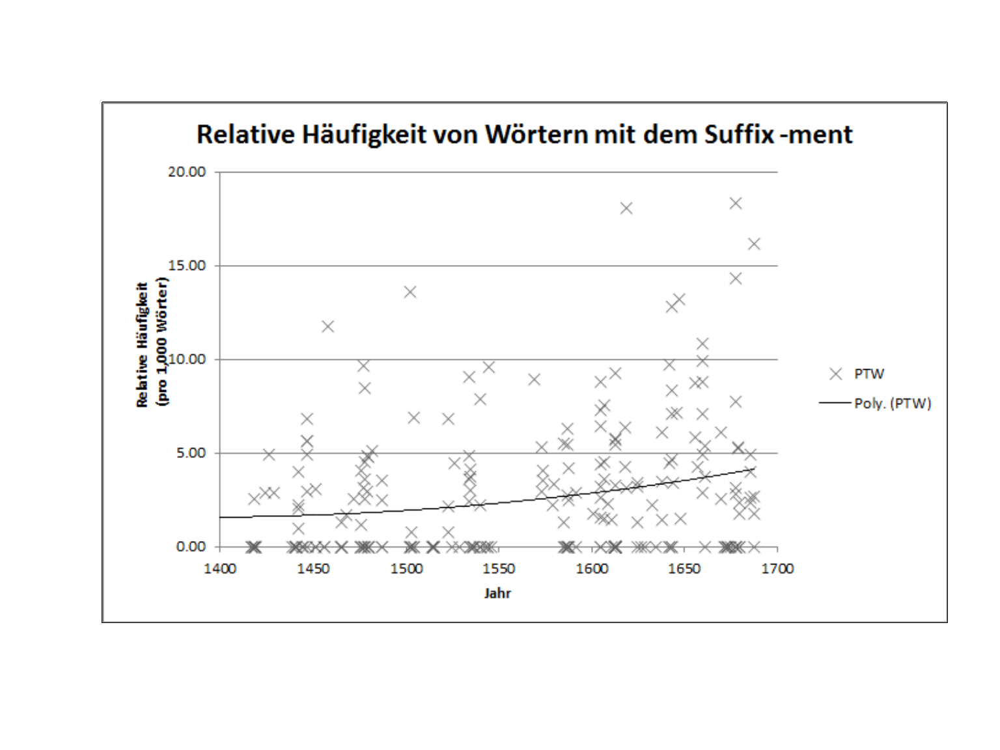

Corpus Linguistics with AntConc, TextPad, and Excel
UQ SLC Digital Team
2019-07-25

1 Introduction
This section exemplifies how to perform a corpus analysis using AntConc, TextPad, and Microsoft Excel. In order to follow the steps, you need to install certain pieces of software which is described in what follows.
1.1 Installing Software
Below you will find descriptions of which pieces of software you need to download and install in order to be able to follow the steps described in this section.
Installing AntConc
AntConc is an open source concordance software which can be used to retrieve lists of key words in context (KWICs or concordances) from corpora. AntConc was developed by Laurence Anthony and can be downloaded from (his website) [http://www.laurenceanthony.net/software/antconc/] free of charge. Alternatively, type “antconc download” into your favourite search engine search box. You will then be able to download AntConc from the site which appears as the first result of your search. The installation process is a very easy, steps-by-step process.
Installing TextPad
To clean the concordances retrieved by AntConc, we will need a text editor. The text editor we will use is TeXtPad because this text editor can handle regular expressions. TextPad can be downloaded form http://www.textpad.com/download/. In this tutorial, we will only use the evaluation version of this program. In case you use TextPad more often, you can also purchase it for a small fee. Alternatively, type “textpad download” into your favourite search engine search box. You will then be able to download TextPad from the site which appears as the first result of your search. The installation process is a very easy, steps-by-step process.
Downloading Corpus Data
In order to be able to process today’s task, you must download some corpus data. The corpora you will need today are
- the Irish component of the International Corpus of English (ICE Ireland 1.2.2).
- the Brown University Standard Corpus of Present-Day American English (BROWN Corpus)
- the * Innsbruck Letter Corpus * (INNSBRUC)
The corpora can be downloaded from the following websites:
- ICE Ireland:
https://slcladal.github.io/data/ICEIrelandS1A.zip - BROWN:
https://slcladal.github.io/data/BROWN.zip - INNSBRUC:
https://slcladal.github.io/data/INNSBRUC.zip
After downloading the corpus, unzip the folder and save it in the workshop folder (if you have not created it already, please create a folder for today’s workshop).
Downloading Metadata
In addition to the corpus data itself, we will also need metadata which contains information about the documents and/or speakers or writers whose language is represented in corpus data.
The metadata can be downloaded from the following websites:
- ICE Ireland Metadata:
http://www.martinschweinberger.de/docs/data/BiodataIceIreland.txt - INNSBRUC Metadata:
http://www.martinschweinberger.de/docs/data/INNSBRUC_meta.txt
After downloading the corpus, unzip the folder and save it in the workshop folder (if you have not created it already, please create a folder for today’s workshop).
1.2 Introduction to AntConc
Before we turn to the task, we will first go through some exercises to help you get to know the functions of AntConc better. Start AntConc and load the BROWN corpus
TIPP: You can watch and download short but very recommendable introductory videos on
https://www.youtube.com/playlist?list=PLiRIDpYmiC0Ta0-Hdvc1D7hG6dmiS_TZj
AntConc Exercises
How often does the word linguistics occur in the BROWN corpus?
Sentence-initial but: what do you have to type into the search box to extract all instances of sentence-initial but? (Given that “Words” and “Case” are checked)
seems like across registers: search for seems like (an informal phrase) and seems that (are more formal variant) in BROWN J and BROWN A (make sure to unload the BROWN J files after you have searched them!). Based on your findings, can you guess which of the two files represents the genre “science writing” and which file represents “press reportages”?
TIPP: “press reportages” is less formal!
- Which variant (seem(s) like or seem(s) that) is used more frequently in science writing by speakers of American English? Have you been aware of this phenomenon?
Wild Cards (Regular Expressions) in
AntConcWild Cards, or regular expressions, are symbols that stand in for other (sequences of) signs. For instance, the symbol * stands for zero to an infinite number of signs while the symbol ? stands for exactly 1 other sign.
In order to find out which wild cards can be used in AntConc and what they stand for, go to Wildcard Settings under Global Settings in the menu at the top of the AntConc GUI.
Warning: If you want to use wild cards, make sure that the option
Regexabove the search box is ticked!
What would you have to type into the search box to find all instances of all forms of the verb to walk (walk, walks, walking, walked) with only one search?
What would you have to type into the search box to find all instances of all forms of the verb to sing (sing, sings, sang, sung, singing) with only one search?
Collocations: search for the term “results” and then go to “Collocates”. Now, press “start” again and order the appearing list by “Freq”. In addition, limit the context to 1 word to the left and 2 words to the right by setting “1L” and “2R” in the “Window Span”. What are the most common collocates of “results”?
What is most frequent lexical collocate that is not a function word?
Counting Types and Tokens: How many word types and word tokens does the BROWN corpus contain? (To answer this question, go to “Word List” and click on “Start”)
Why is this method not really precise?
2 Example 1: Swearing in Ireland
As a first task we investigate whether men or women swear more in Irish English. As a first step, we familiarize ourselves with the steps performed during Corpus Analyses. During this task, we will perform the following steps:
Load corpus data into
AntConcAdapt settings of
AntConcSearch for a list of swearwords in the corpus data.
Extract swear words with little context from the corpus data.
Search and extract swearwords with a lot of context.
Save results in a folder.
Clean the extracted data in TextPad.
Load data into Microsoft Excel.
Find the speakers who used the swear words.
Calculate the absolute frequency of swear words.
Add biodata of the speakers to our table.
Create a table showing the mean relative frequency of swear words by gender (and age).
Display the results graphically.
Determine if the differences are statistically significant.
We will now start with the task and go through the steps described above.
2.1 Extract Swear Words
The following lists the steps that are necessary to extract and save the swear words for today’s task.
Make a list of swear words and save this list as a
.txtfile in your project folder. IMPORTANT: Each word (or sequence) must be in its own line.Before starting the search, please go to the main menu under
Tool PreferencesonConcordanceand click onPut delimiter around hits in KWIC display. As a result, the previous and following context around the hits in Excel will appear in columns other than the hits themselves, and you will be able to edit the data with much more ease later on.Use AntConc to find these bad words in the ICE Ireland corpus by going to
Advancedthe boxUse search term (s) from list below. Click on it, then browse to your list of swear words, then click onApplyand then onStartunder the search window.
TIP: Use regular expressions so that the list contains all relevant words and at the same time is not too long.
Then export and save the data (the
.txtfiles) in your project folder by clickingFilein the main menu. Then, click onSave Output to Text Fileclick and navigate to your folder. Name the resulting.txtfileCursewords-ire-2019-02-12-short.Now look again for the swear words in your list, but now increase the context and enter there the maximum value (1,000).
Then export and save this new
.txtfile in your project folder and name the resulting txt filecursewords-ire-2019-02-12-long.
2.2 Cleaning Data Using TextPad
Now that we’ve extracted the data using AntConc we need to clean the data. We will do this with the help of TextPad. The following steps are needed to clean the data so that we can further process and analyse it in the subsequent step with Mircosoft Excel.
Open the file
cursewords-ire-2019-02-12-short.txtinTextPad. As you can see, the formatting is partially broken. In the next steps we will restore the formatting and clean the results.Click
f8- it should now open aSearch and Replacewindow. Check the boxRegular expressionand then search for\n<and replace this sequence with<. Repeat this untilTextPadindicates that no occurrences of\n<have been found.Uncheck the
Regular expressionbox, then search for` (two white spaces) and replace this sequence with(a single white space). Repeat this untilTextPadindicates that no occurrences of` (two spaces) were found.Click on the checkbox
Regular expressionagain and then search for\(space after the “n”“) and replace this sequence with\n(no space after”n“). Repeat this untilTextPadindicates that no occurrences of\nwere found.Then search for
\n \tand replace this sequence with` (spaces). Repeat this until TextPad indicates that no occurrences of` were found.Now mark the data in TextPad (“Cntl” + “a”) and copy it (“Cntl” + “c”) and paste it into a spreadsheet in Microsoft Excel (“Cntl” + “v”) in cell A2. Delete empty or unnecessary columns and give the remaining columns the headings id, pre, token and post.
Repeat these steps for the
cursewords-ire-2019-02-12-long.txtfile, but paste this data next to the already inserted data in the spreadsheet (such that the first line of the “long” data is next to the first line of the “short” file content.
2.2.1 Exercises: Getting to know TextPad
Create a copy of the ICE Ireland corpus and then load these files into TextPad.
Replace all occurrences of small
awith the sequenceqwertz.Delete all special characters in the corpus. Which problem do you encounter?
Replace all line breaks and replace them with tab stops.
Now replace all tab stops with line breaks.
2.3 Process Data in Microsoft Excel
The data was extracted using AntConc and cleaned with TextPad and prepared. The next steps show how the data can now be edited and analysed with Microsoft Excel.
Delete all columns of the “long” data set except the column with the previous context (which you may have labelled
prelong), which you give the heading spk.Highlight the spk column (click on the top of the letter) and click
ResetunderSearch and Select. In the pop-up window underSearch forplease enter* $and underReplace withnothing. Then click onReplace all.Highlight the spk column (at the top of the letter) again and under
Search and Selectclick onReset. In the pop-up window, type underLook forplease> *and underReplace withnothing. Then click onReplace all.You will see that we have now extracted the speaker for a lot of bad words. To identify the remaining speakers, select the entire worksheet (click on 1 and next to A) and then go to
Customized SortingunderSort and Filter. Click the checkboxData have headersand then sort the data in ascending order to spk. This way, all cases that do not have a unique speaker appear at the top of your spreadsheet.Before you manually search for the speakers, you should encode the data according to whether the particular hit is really a swear word or just a false hit. You do this by going into an empty column, labelling it with hit and then, if the hit is a dirty word, enter a 1, otherwise a 0.
Unfortunately, you must manually search the missing speakers who have used a swear word by copying a few words (it must be whole, complete words) from the previous context of the hit (i.e. from the cell next to the relevant token in the pre column), and look for this sequence in the ICE Ireland data using AntConc. Then click on the hit in the AntConc Concordance window (this brings you to the location in the file where the hit is) and look for the speaker, which you then insert manually into the Excel spreadsheet.
2.4 Join Tables in Excel
In the following, the data that we extracted using AntConc, cleaned with TextPad and edited with Microsoft Excel are connected to the speaker data. To perform this step, follow the steps listed below. Please note that you probably need to adjust the cells for your analysis.
You now have a spreadsheet with the file containing the dirty word, the dirty word itself, the context in which it is used, and the speaker who made it. In the next step we will determine if and how often a speaker has used bad words.
Copy the speaker data into a new worksheet and copy the columns file, spk and sum, which have the value 1 in the column test, next to the columns with the speaker information.
Name the next free column afreq and enter the following command in the first cell of this column:
= COUNTIFS($J$2:$J$364; C2; $K$2:$K$364; D2)
Copy the column afreq and paste it back in again as values, ie: after copying the columns, right-click and type
insert contentsand selectvalues insert.Now delete the columns file, spk and hi - they are no longer needed.
Copy the resulting spreadsheet.
Sort the new table in ascending order by word.count and delete the rows that have a value less than 50 in the column word.count. Then sort the table again first by text.id and secondly by spk.ref.
Name the next free column * ptw * and enter the following command in the first cell:
=J2/I2*1000
Then sort the new custom table (with headers) first by file and then by spk.
Now name the next two columns as sum and test and type the following command in the first cell of the column sum:
=IF(AND(A2=A1; B2=B1); C1+1; 1)
Now move your cursor to the lower right corner of the cell where you typed this command until a black cross appears and double-click on it with the left mouse button.
- Now go to the first cell of the column test and enter the following command:
=IF(AND(A2=A3; B2=B3); 0; 1)
Now move your cursor to the lower right corner of the cell where you typed this command until a black cross appears and double-click on it with the left mouse button.
Now copy the columns sum and test and paste them back in again as values (after copying the columns, right-click and type
insert contentand selectinsert values.Now sort the table by user defined descending to test.
2.5 Visualizations in Microsoft Excel
We are now ready to summarize and display the results. In the first step, we will plot the means of the relative frequencies of swear words by text type.
To be able to display the text types, you must copy the text.id column to an empty column. Then replace the headline with texttype. Then, highlight this new column and then go to
Sort and SelectonReplace. In the window that appears, please enter-*and then click onReplace all.In the next step replace
S1AwithPrivate,S1BwithPublic,S2AwithUnscriptedandS2BwithScriptedwithSearch and ReplaceatSearch forand pressReplace withthe respective sequences and then click onReplace all.Now highlight the columns texttype and ptw and then go to
Pivot Tableunder the tabInsert, then left click and then click onOKin the window that open after your left-click.You will now be directed to a new page, and you can drag texttype into the ´rows´ area and ´ptw´ in the ´values´ area at the right edge of the table. Then click on the small black arrow next to ´sum of ptw´ and click on ´Value Settings´. For ´Value Settings´, select ´Mean´ and click on ´OK´.
Copy the now created table and paste again (as described above) as values into the same worksheet. Replace the headers row labels with text type and mean of ptw with swearwords. Now delete the line total result. Now mark the numerical values and make a right click. Then go to ´Format cells´ and select the option 3 decimal places under ´Number´.
Select the resulting table and under ´Paste´, click on ´Insert line diagram´. Just select the first line chart type.
Add data labels, a title, axis labels, an exponential trend line, remove the line, format marks to the data points, and adjust the Y intercept. You can do all this by clicking on the graphic and then on the plus sign which appeared on the top right next to the graphic.
Your plot should ideally look like the one below.

In the next step, we will graphically represent the gender distribution. To do this, create a new pivot table, copy the values and paste them back in as values and select a column chart as the display type. Add data labels, a title, axis labels, and adjust the colour of the columns. You can do all this by clicking on the graphic and then on the plus sign which appeared on the top right next to the graphic.
Your graphics should ideally look like this now:

In the final step, we will plot the interaction between age and gender simultaneously. To do this, create a new pivot table, copy the values and paste them back in as values and select a column chart as the display type. To represent several lines, the values have to be arranged differently: the values for men, women and both together have to be listed in their own row. You can include the age groups as column headings, as this makes data labelling easier.
Now, add data labels, a title, axis labels, and adjust the colour of the columns. You can do all this by clicking on the plot and then on the plus sign which appeared on the top right next to the graphic.
Your graphics should ideally look like this now:

2.6 Exercises: Creating Tables and Plots in Microsoft Excel
(Sie benötigen für diese Aufgaben die Tabelle mit den Sprecherdaten)
Generate a summary table showing the numbers of speakers in the text type Private Dialogue by age and gender.
Generate a summary table with the word counts of the text types by age group and gender.
Create a graph that shows the number of words by age group and gender.
2.7 Statistics with Microsoft Excel
To perform more complex statistical analysis with Excel, you must use the Data Analysis Add-In. However, for this example, simple \(\chi\)2 tests are sufficient.
2.7.1 Chi-Square Tests in Microsoft Excel
Since the \(\chi\)2 test accepts only nominal or categorical variables, we need to adapt our data. Go back to the table that contains all the speaker information and the relative frequencies of swear words. Copy this spreadsheet into a new Excel window and save this window under the name Statz. Now delete all columns except: file.speaker.id, Age, Sex, Texttype, and ptw. Also delete all rows that do not represent the text type Private. Then create a new column that you call swear.
- In the first cell of swear enter the following command (provided that the relative frequencies of the swear words are listed in column
D):= IF(D2=0; 1; 0)
Now move your cursor to the lower right corner of the cell into which you typed this command until a black cross appears and left double-click on this cross. Now that all cells in this column indicate whether or not the speaker has used a swear word, copy the contents of the column swear and paste them back in again as values, that is: after copying the column, right-click and type insert contents and select insert values.
Highlight the table, go to
Pivot Tablein theInserttab and clickOKin the window that opens.In the opening window, drag ´sex´ into the
rowsarea andswearinto thevaluesarea. Now dragsexfrom above also into thevaluesarea and then clickOK.In the next step, you copy the table and paste it back in again as values, that is: after you have copied the table, go to a free field, make a right mouse click, give on
Paste contentand selectinsert values.Next to the cell containing the number of female speakers, subtract the number of women who used bad words from the total number of women (262-91 = 171). Do the same for the men. Copy the table and paste it as a table of values. Now delete the column that contains the total number of speakers by gender - it is irrelevant to the way you proceed.
Now calculate the row and column totals, as well as the total sum (TIP: use the sum function of Microsoft Excel).
You should now have generated the following table:
## Warning: package 'knitr' was built under R version 3.5.2| Swear Word Users | Non Swear Word Users | Sum | |
|---|---|---|---|
| Women | 91 | 171 | 262 |
| Men | 37 | 45 | 82 |
| Sum | 128 | 216 | 344 |
This table of values forms the basis for the \(\chi\)2 test because it contains the observed values. We will now create two more tables from this table using simple commands.
- Find four free cells under the table. For each cell, calculate the value that would be expected if women and men did not differ by multiplying the row sum by the column sum and dividing by the total (see equation below).
You should now have generated the following table:
| Swear Word Users | Non Swear Word Users | Sum | |
|---|---|---|---|
| Women | 97.49 | 164.51 | 262 |
| Men | 30.51 | 51.49 | 82 |
| Sum | 128.00 | 216.00 | 344 |
- In a next step, we calculate the \(\chi\)2 value by implementing the equation from below in each cell:
For the top right cell (women who have used swear words) you should get the following result:
\[\begin{equation} \frac{(91 – 97.49)^{2}}{97.49} = \frac{(-6.49)^{2}}{97.49} = \frac{42.1201}{97.49} = \frac{42.1201}{97.49} = 0.432 \label{eq:chibsp} \end{equation}\]You should now have generated the following table:
| Swear Word Users | Non Swear Word Users | Sum | |
|---|---|---|---|
| Women | 0.432 | 0.256 | 0.688 |
| Men | 1.812 | 1.074 | 2.885 |
| Sum | 1.380 | 0.818 | 2.197 |
The sum of all \(\chi\) values (2.197) is now the \(\chi\)2 value and only this value is relevant to us. To determine if this value is significant, we must first calculate the degrees of freedom and then see if its value is greater than a critical \(\chi\)2 value (if yes, then the results are statistically significant) or your \(\chi\)2 value is lower than the critical \(\chi\)2 value (then your results are not statistically significant).
The degrees of freedom are calculated according to the formula ( ref {eq: df}).
\[\begin{equation} DF = (Number of rows -1) \times (Number of columns – 1) = (2-1) \times (2-1) = 1 \times 1 = 1 \label{eq:df} \end{equation}\]So, according to the formula above, we have one degree of freedom and we can now check if our \(\chi\)2 value (2.197) is above or below the critical value. You can find tables with critical \(\chi\)2 values in many statistics introductions or in WorldWideWeb, for example: http://www.mesosworld.ch/lerninhalte/Biv_Chi/de/html/unit_SignKritWert.html
The table below shows a section of such a table.
| DF | p<.05 | p<.01 | p<.001 |
|---|---|---|---|
| 1 | 3.84 | 6.64 | 10.83 |
| 2 | 5.99 | 9.21 | 13.82 |
| 3 | 7.82 | 11.35 | 16.27 |
| 4 | 9.49 | 13.28 | 18.47 |
| 5 | 11.07 | 15.09 | 20.52 |
Since our calculated \(\chi\)2 value is far below the value of the critical value, we cannot discard the H0 and must therefore note that there is no statistically significant relationship between the gender of the speakers and the use of swear words consists. However, before we summarize the results, we will also calculate the effect size.
The effect size measure used in \(\chi\)2 tests is either the \(\phi\) coefficient (phi coefficient) or Cramer’s \(\phi\) (Cramer’s phi), which is used when doing more counts as four table fields. The \(\phi\) coefficient can be calculated using the formula below (N = sample size).
\[\begin{equation} \phi = \sqrt{\frac{\chi^{2}}{N}} \label{eq:phi} \end{equation}\]For our results this means:
\[\begin{equation} \phi = \sqrt{\frac{2.197}{344}} = \sqrt{0.00639} = 0.0799 \label{eq:phi2} \end{equation}\]The value of \(\phi\) ranges from 0 (no correlation) to 1 (perfect correlation). For the division into weak, medium and strong effects one can follow the division for Cohen’s \(d\), so that for values from .2 to .3 represent a small, values up to 0.5 represent a medium and values of .8 or higher represent a strong effect. Based on this categorization, we are dealing with an effect that does not even classify as weak in this example.
The result of our example can be summarized as follows: A \(\chi\)2 test confirms no significant correlation between the gender of the speakers and the use of swear words in Irish English (\(\chi\)2 = 2.197, df = 1, p \(\ge\) .05, \(\phi\) = .08).
2.8 Exercises
Do men and women in certain age groups differ in their use of swear words in Irish English? We will perform three more \(\chi\)2 tests. How do you test the following research questions?
- Do men and women aged between 19 and 25 differ in their swear word use?
- Do men and women aged between 34 and 41 differ in their swear word use?
- Do men and women older than 50 differ in their swear word use?
3 Example 2: -ment across Time
We will now devote ourselves to a second exercise. The task will be to determine the frequency of the nominal suffix * ment * between 1500 and 1700 based on the INNSBRUC corpus.
Die notwendigen Schritte, um diese Frage empirisch beantworten zu können, sind folgende:
- Load corpus data in AntConc.
- Adjust settings in AntConc.
- Search for all words with ment in the data with little context (50 symbols left and right).
- Save the data in the project folder.
- Clean the data in TextPad.
- Copy data to Microsoft Excel.
- Specify texts that use a word with ment.
- Absolute frequencies Determine words with ment per text.
- Determine relative frequencies of the words with ment per text.
- Tabulating the relative frequencies with regard to the year of creation of the texts.
- Graphical representation of the relative frequencies with regard to the year of creation of the texts.
- Statistical evaluation of the results using the created frequency tables.
Since the individual work steps have been described in detail in the previous section, only the statistical analysis is dealt with here since these exercises essentially differ from the first exercise task.
3.1 Visualization of the Results
If you followed the procedure truthfully, the visualization of your results should ideally look like the figure below.

3.2 Data Analysis Add-In in Microsoft Excel
As noted above, for more complex statistical analysis, it makes sense to install the ´Data Analysis Add-In´. This offers the possibility, for example, to perform regressions via a ready-made mask. We will now focus on how to install the ´Data Analysis Add-In´ and perform a simple analysis with it.
- To install the ´´Data Analysis Add-In´, go to ´file´ under ´options´ and then on ´add-ins´ in the appearing window. Search go the add-in named ´Analysis Functions´ and activate it.
- Under the tab ´Data´, a function called ´Data analysis´ will appear on the far right.
- Before beginning the analysis, you need to rearrange the speaker data with the relative frequencies. To do this, go to the speaker data and relative frequencies sheet and then go to ´Sort and Filter´. Then sort the data by type of text and then - by gender - in a second level.
- To use the data analysis tool, go to tab ´Data´ on ´Data analysis´ and select the function ´Regression´. In the window that appears, enter the ptw values and the year the texts were written in into the table area. Click ´OK´ and look at the results.
Since a detailed discussion of the results would be too extensive, only briefly look at the key figures.
The appearing table shows that the regression is based on 254 data points and that the independent variable ´YEAR´ explains 5.1% of the variance (coefficient of determination 0.051). If you were to carry out the analysis on the basis of the real population rather than on the basis of the existing sample (all letters written between 1400 and 1700), then it is to be expected that the same regression would explain 4.7% of the variance (adjusted coefficient of determination 0.047). The independent variable (YEAR) correlates highly significantly and positively with the relative frequency of words with the suffix -ment (coefficient (YEAR) = 0.00948, p-value (YEAR) = 0.002766291.) The regression explains the observed distribution significantly better than a base-line model that is based merely on the overall mean (p-value (intercept) = 0.002762).
4 Using Macros in Microsoft Excel
Macros are small programs that are especially useful when you have to perform tasks repeatedly. The great advantage of using macros in Microsoft Excel is that you do not have to program, but simply record analysis, key-sequence steps, and then use the key sequence to automatically run the same analysis steps from Excel.
To illustrate this functionality, we will count the number of words of the letters in the * Innsbruck Letter Corpus *.
4.1 Preparation
For the following analysis you need the INNSBRUC corpus, ´TextPad´ and Microsoft Excel.
Before you begin, copy the INNSBRUC corpus and load the copied version into ´TextPad´. Click on ´F8´, select ´All documents´ and replace all special characters and then all double spaces with nothing. Then save the results by clicking under ´File´ and click on ´Save all´.
- Click into cell ´A1´ and then go to the tab ´VIEW´ and under ´Record macros´ click on ´Macro´.
- Under ´Key combination´ a tray a little ´o´ on (you can choose any other letter, but ´o´ lends itself to that it has not yet been occupied by other shortcuts). Then you can describe the task of the macro. You could, for example, write: This macro counts the words in cell ´A1´ and returns the result in cell ´B1´ out.
- Open the first file of the copied INNSBRUC corpus and mark the contents of the file (´Ctrl´ + ´A´), Copy the contents of the file (´Ctrl´ + ´C´) and paste the copied content into the cell ´A1´ a (´Ctrl´ + ´v´).
- Now enter in cell ´B1´ enter the following command:
´= IF(LENGTH(A1)=0; 0; LENGTH(A1)LENGTH(CHANGE(A1; “”; “”)))´
As soon as you click ´Enter´, the number of words in the text appears in cell ´A1´.
- Now go back to cell ´A1´, then go to the tab ´VIEW´ and click under ´macros´ on ´Stop recording´.
- Now you can copy the second file the INNSBRUC corpus in cell ´A1´ paste, then ´Ctrl´ + ´o´ Click and Microsoft Excel will give you the word count of the second file.
- TIP: If you want to copy the results and write to another file, copy the contents of the cell ´B1´ and insert it as values!
You can also use macros to record and execute much more complex command sequences. I have a video tutorial on my YouTube channel: https://www.youtube.com/watch?V=wzTT15ESGGg!